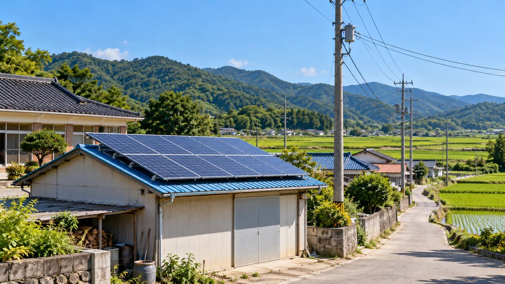

1MW 이하 주민참여 재생에너지 '계통 우선접속' 시행령 입법예고…행안부·기후부 두 단계 인정

분산에너지법·전기사업법 시행령 동시 개정, 12월 16일 법 시행 앞둬…망 여유 확충·기존 대기 사업자 형평성은 과제
기후에너지환경부가 10월 14일 분산에너지 활성화 특별법 시행령과 전기사업법 시행령 개정안을 함께 입법예고해, 설비용량 1MW 이하 공익형 주민참여 재생에너지 사업을 다른 사업보다 먼저 전력망에 연결하는 제도의 세부 틀을 마련했다. 두 시행령은 9월 15일 공포돼 12월 16일 시행되는 개정 법률의 후속 조치로, 의견 수렴은 10월 30일까지다. 우선접속 대상은 행정안전부 장관이 지역경제 활성화 등 공익성을 인정해 선정한 사업 가운데 기후에너지환경부 장관이 계통 여건을 따져 인정한 사업으로, 1MW 이하이고 주민이 참여한다는 이유만으로 자동 적용되지는 않는다. 전기사업법 시행령은 송·배전망의 '차별 없는 이용' 원칙에 이 사업들을 위한 예외를 두며, 대표적 정책 대상으로 햇빛소득마을이 꼽힌다. 다만 변전소·배전선로가 이미 포화된 곳에서는 우선권만으로 연결이 어렵고, 기존 접속 대기 사업자와의 형평성, 주민참여의 실질성을 판단할 기준 마련이 과제로 남는다.
시민에너지 관점
계통 대기가 길어질수록 금융비용이 커지는 소규모 주민 사업에 우선접속은 의미 있는 진전으로 보이지만, 망 여유를 늘리는 투자가 함께 가지 않으면 한정된 접속 용량을 놓고 경쟁만 바뀔 수 있다. 우선권이 주어지는 만큼 발전수익이 실제로 주민에게 얼마나 돌아가는지, 주민이 의사결정에 어느 정도 참여하는지를 확인하는 공개적 기준이 함께 필요하다. 입법예고 기간에 마을과 협동조합이 현장의 접속 대기 사례를 의견으로 내는 것도 제도를 다듬는 데 도움이 될 것이다.
마을과 협동조합은 10월 30일까지인 의견 수렴 기간에 실제 접속 대기 사례와 대기 중 늘어난 금융비용을 정리해 의견으로 낼 수 있다. 정부는 우선접속을 인정할 때 발전수익이 주민에게 돌아가는 비율과 주민의 의사결정 참여를 확인하는 공개 기준을 함께 정해야 한다. 한국전력과 정부는 변전소·배전선로가 포화된 곳의 망 보강 계획과 일정을 공개해, 우선권이 실제 연결로 이어지게 해야 한다. 기존 접속 대기 사업자와의 형평성 문제는 대기 순서와 판단 기준을 투명하게 공개하는 것으로 갈등을 줄일 수 있다.
출처: 에너지데일리 2026-10-14 변국영 원문 보기
1MW以下の住民参加型再エネに「系統優先接続」施行令を立法予告…行政安全部・気候部の2段階で認定
分散エネルギー法・電気事業法の施行令を同時改正、12月16日の法施行を前に…送配電網の余力拡充や既存待機事業者との公平性は課題
気候エネルギー環境部（気候部）が10月14日、分散エネルギー活性化特別法の施行令と電気事業法の施行令の改正案を同時に立法予告し、設備容量1MW以下の公益型住民参加再生可能エネルギー事業を他の事業より先に電力網へつなぐ制度の細部の枠組みを整えた。二つの施行令は9月15日に公布され12月16日に施行される改正法の後続措置で、意見募集は10月30日まで。優先接続の対象は、行政安全部長官が地域経済の活性化など公益性を認めて選んだ事業のうち、気候部長官が系統の状況を踏まえて認めた事業で、1MW以下で住民が参加するというだけで自動的に適用されるわけではない。電気事業法施行令は送配電網の「差別のない利用」原則にこれらの事業のための例外を設け、代表的な政策対象として「日差し所得村（햇빛소득마을）」が挙げられる。ただ、変電所や配電線がすでに飽和している所では優先権だけで接続するのは難しく、既存の接続待ち事業者との公平性や、住民参加の実質を判断する基準づくりが課題として残る。
市民エネルギーの視点
系統接続の待ち時間が長くなるほど金融費用がかさむ小規模な住民事業にとって、優先接続は意味のある前進とみられるが、送配電網の余力を増やす投資が伴わなければ、限られた接続容量をめぐる競争の順番が入れ替わるだけになりかねない。優先権が与えられる分、発電収益が実際に住民へどれだけ還元されるのか、住民が意思決定にどの程度関わるのかを確かめる公開の基準も併せて必要だ。立法予告期間中に村や協同組合が現場の接続待ちの事例を意見として出すことも、制度を磨くうえで役立つだろう。
村と協同組合は、10月30日までの意見募集期間に、実際の接続待ちの事例と待機中に膨らんだ金融費用をまとめて意見として出すことができる。政府は優先接続を認める際、発電収益が住民に還元される比率と住民の意思決定への参加を確かめる公開の基準をあわせて定めるべきだ。韓国電力と政府は、変電所や配電線が飽和した地域の系統増強の計画と日程を公開し、優先権が実際の接続につながるようにすべきだ。既存の接続待ち事業者との公平性の問題は、待機の順番と判断基準を透明に公開することで対立を和らげられる。
出典: 에너지데일리 2026-10-14 변국영 原文を読む
1MW以下居民参与型可再生能源"电网优先接入"施行令预告，须经行政安全部和气候部两道认定
分布式能源法与电力事业法施行令同步修订，法律将于12月16日施行；扩充电网余量、与现有排队项目的公平性仍是课题
韩国气候能源环境部于10月14日同时预告了《分布式能源活性化特别法施行令》和《电力事业法施行令》修订案，为装机容量1MW以下的公益型居民参与可再生能源项目先于其他项目接入电网的制度搭建了具体框架。两部施行令是对9月15日公布、12月16日施行的修订法律的后续措施，意见征集截至10月30日。优先接入对象是行政安全部长官以促进地方经济等公益性为由选定、并由气候能源环境部长官结合电网条件予以认定的项目，并非只要在1MW以下且有居民参与就自动适用。《电力事业法施行令》为这些项目在输配电网"无差别使用"原则上设立例外，"阳光收入村"（햇빛소득마을）被视为主要政策对象。不过，在变电站和配电线路已经饱和的地方，仅靠优先权难以实现接入；与现有排队项目之间的公平性，以及判断居民参与是否名副其实的标准，仍有待解决。
市民能源视角
对排队时间越长、融资成本越高的小型居民项目来说，优先接入似乎是有意义的进展，但如果没有同步扩充电网余量的投资，可能只是改变了争夺有限接入容量的先后顺序。既然给予优先权，也需要公开的标准来核实发电收益实际有多少回到居民手中、居民在多大程度上参与决策。在预告期间，村庄和合作社把现场排队接入的实际案例作为意见提交，也将有助于完善制度。
村庄和合作社可以在截至10月30日的意见征集期内，整理实际排队并网的案例和排队期间增加的融资成本，作为意见提交。政府在认定优先并网时，应同时制定公开标准，核实发电收益回到居民手中的比例和居民参与决策的程度。韩国电力和政府应公开变电站和配电线路已饱和地区的电网加强计划和时间表，使优先权真正转化为并网。与现有排队企业之间的公平问题，可以通过透明公开排队顺序和判断标准来减少冲突。
来源: 에너지데일리 2026-10-14 변국영 查看原文
Korea proposes decrees on grid priority for resident-owned renewables of 1MW or less, with two-ministry approval
Distributed energy and electricity business decrees revised together ahead of the law taking effect December 16; grid headroom and fairness to queued projects remain open questions
On October 14 the Ministry of Climate, Energy and Environment issued draft amendments to the enforcement decrees of the Distributed Energy Special Act and the Electricity Business Act, setting out the detailed framework for connecting public-interest, resident-participation renewable projects of 1MW or less to the grid ahead of other projects. The two decrees follow up on amended laws promulgated on September 15 that take effect on December 16, and public comments are open until October 30. Eligible projects are those the Minister of the Interior and Safety selects as serving the public interest, such as reviving local economies, and that the climate minister then approves in light of grid conditions, so being under 1MW with resident participation does not by itself guarantee priority. The Electricity Business Act decree creates an exception for these projects to the principle of non-discriminatory use of transmission and distribution networks, with the "Sunlight Income Village" program named as the main policy target. Still, priority alone cannot connect projects where substations and feeders are already saturated, and fairness toward projects already in the queue and standards for judging whether resident participation is genuine remain to be worked out.
Citizen Energy View
For small resident projects whose financing costs mount the longer they wait for a connection, grid priority looks like meaningful progress, but without investment to expand grid headroom it may only reshuffle the competition for limited capacity. Since priority is being granted, public standards are also needed to verify how much generation revenue actually reaches residents and how far they take part in decisions. Villages and cooperatives submitting their own connection-delay cases during the comment period could also help refine the scheme.
During the comment period, which runs to October 30, villages and cooperatives can compile and submit actual cases of connection delays and the financing costs that grew while they waited. In granting priority, the government should also set public standards for checking the share of revenue that returns to residents and how far residents take part in decisions. KEPCO and the government should publish plans and timetables for reinforcing the grid where substations and distribution lines are saturated, so that priority actually leads to connection. Concerns about fairness to projects already in the queue can be eased by publishing the queue order and the criteria used to judge it.
Source: 에너지데일리 2026-10-14 변국영 Read the original